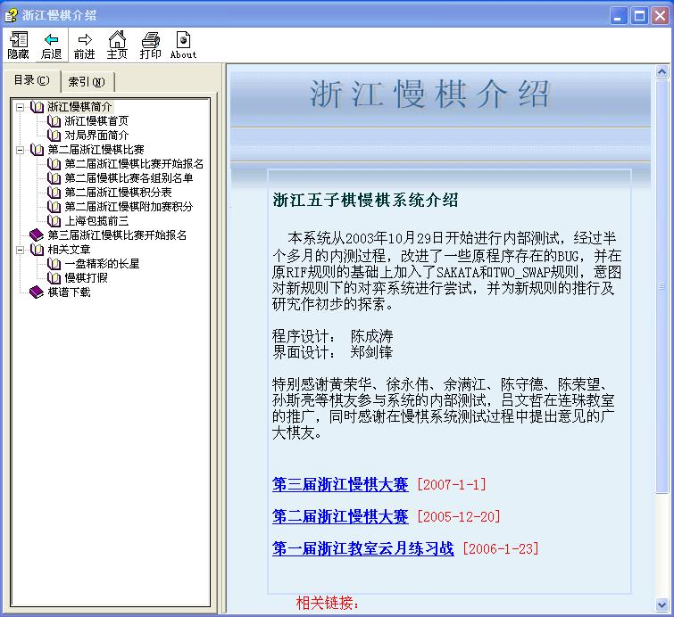

浙江慢棋介绍（电子书）
首页
定式及研究
#1 浙江慢棋介绍（电子书） 作者：江南新绿 发表时间：2006-12-18 23:43:55
包括第二，三届浙江慢棋比赛介绍，对局界面，对局的地址，对局的棋谱，打谱的软件，相关的棋局的评论，以及a组高手之间的交流。以上内容虽然均来自于网络，但作者在选材方面上没有遗漏，呈现给大家一个非常真实赛事报道。
江南新绿收集整理，清逸界面设计，可以自由转载

点击下载
#2 Re:浙江慢棋介绍（电子书） 作者：酒鬼 发表时间：2006-12-19 12:42:27
学棋…………………………6666
#3 Re:浙江慢棋介绍（电子书） 作者：旅人 发表时间：2006-12-20 11:59:58
急需提高水平,看看.
#4 Re:浙江慢棋介绍（电子书） 作者：小学生 发表时间：2006-12-23 14:23:31
我很想学好
#5 Re:浙江慢棋介绍（电子书） 作者：伊888 发表时间：2006-12-23 16:55:08
学习
#6 Re:浙江慢棋介绍（电子书） 作者：彩霞-满天 发表时间：2006-12-24 18:45:32
谢谢分享
#7 Re:浙江慢棋介绍（电子书） 作者：『齐鲁』林夕 发表时间：2006-12-25 9:38:01
偶来了
#8 Re:浙江慢棋介绍（电子书） 作者：yidefei 发表时间：2006-12-28 20:43:14
不错呀！谢谢
#9 Re:浙江慢棋介绍（电子书） 作者：skyey 发表时间：2006-12-30 12:06:53
kankan
#10 Re:Re:浙江慢棋介绍（电子书） 作者：skyey 发表时间：2006-12-30 14:18:38
一点就重启~郁闷~
#11 Re:浙江慢棋介绍（电子书） 作者：gerbo 发表时间：2007-1-1 0:22:10
看看啊，好东西哟
#12 Re:浙江慢棋介绍（电子书） 作者：爱在春夏秋冬 发表时间：2008-4-23 20:25:17
这个谱好象打不开啊 ！
#13 Re:Re:浙江慢棋介绍（电子书） 作者：有志青年 发表时间：2008-4-23 20:33:20
引用：
原文由 爱在春夏秋冬 发表于 2008-4-23 20:25:17 :
这个谱好象打不开啊 ！
这个文件正常哟
#14 Re:浙江慢棋介绍（电子书） 作者：爱在春夏秋冬 发表时间：2008-4-23 20:37:08
下下来打开全是那个找不到E
#15 Re:浙江慢棋介绍（电子书） 作者：五子天下 发表时间：2008-4-29 9:41:51
以前开个局 没人应
#16 Re:浙江慢棋介绍（电子书） 作者：起航 发表时间：2009-8-15 18:45:00
呵呵，下载回去学学哈。